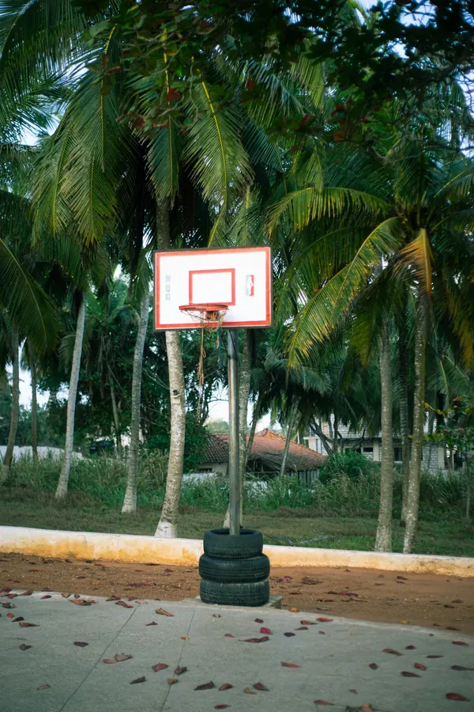

December is Ghana’s busiest month for things to do. Christmas, end-of-year concerts, street carnivals, food markets, plays and traditional festivals all fall in a few weeks, and many Ghanaians who live abroad come home for them, along with visitors from across the African diaspora.1
The government runs the season as December in GH, through the Ghana Tourism Authority. This year it runs from 1 December 2026 to 3 January 2027 under the theme “Ghana to the World”, with more than 150 events registered, over 100 of them in Accra.2, 3 Many people call it Detty December; the government prefers its own name.4
The season grew after Ghana’s 2019 Year of Return, which marked 400 years since enslaved Africans were first brought to North America.1 Below are the events we’ve listed so far, in date order, with what to expect at each.
What’s on
116 events in date order. Running an event we’ve missed? Tell us.
Run by the Howard University Alumni Association, Crescendo Foods and members of Delta Sigma Theta Sorority. Bring books by African and diaspora authors, in English, French or a Ghanaian language, for children aged 6 to 15; cookbooks go to Crescendo Foods.
Organised by Empire 102.7 FM and running from 4 to 25 December. It ends with the Oil City Carnival on Christmas Day, a street parade of masquerade groups.
WhereOld John Sarbah Road, Takoradi
Music & nights out
Sankofa African Tour: Camden Stewart
The violinist Camden Stewart, Classic FM Rising Star 2026, brings his classical crossover tour to Ghana as a celebration of ancestry and homecoming. Venues are listed as ballrooms and open-air spaces.
Wɔ Nɔ Nɛ means “this is our own” in Ga. Artists paint North Kaneshie and the streets around it, and traders set up along the way: a homecoming for the neighbourhood.
WhereSwanlake, Palace Street, North Kaneshie
Stage, art & talks
Walk Boldly: Hands That Shape Ghana
Two days of artisans, heritage and community, led by Arhin Sole Creations with Eclectic Love and Nunyola Impact Consulting.
Dances from the north, middle and south of Ghana, chosen and performed by the National Dance Company (the Ghana Dance Ensemble), with movement as a language of its own.
A concert of the Volta Region’s music and new talent, back after last year’s edition. When we checked, the venue (Jubilee Park or the HTU Auditorium) was still being agreed.
WhereHo (Jubilee Park or the HTU Auditorium, to be confirmed)
Stage, art & talks
America After Dark with Ben Crump
An evening exploring America through the eyes of the civil rights lawyer Ben Crump. The venue was still tentative when we checked.
Led by northern Ghana’s traditional authorities: the north’s culture and heritage on show, alongside investment opportunities for investors and the diaspora.
A yearly international film festival for African and global cinema, bringing filmmakers, producers, distributors and investors together for screenings and an awards night.
WhereLa Palm Royal Beach Hotel and The Palms Convention Centre

A court among the palms, Accra Kingsley Hemans · Unsplash License
The grand durbar of the chiefs and people of the Battor Traditional Area, the high point of Hogbeza. The festival itself runs from 28 November to 16 December.
Billed as the only headline show of the season built around a female artist on her own terms, with the site turned into a world drawn from her new album.
A week across the city: exhibitions, pop-ups, talks, performances, screenings, workshops and tours of galleries and studios.
WhereGalleries across Accra
From Afrogallonism, an art exhibition in Accra in 2023, not from Art Week itself.
Warriors in horned headdresses Christian Yakubu · CC BY-SA 4.0The war dance Christian Yakubu · CC BY-SA 4.0A horned headdress Christian Yakubu · CC BY-SA 4.0
Organised by Mo Tribe and ZGL Solutions, bringing northern Ghana’s traditional areas together for culture, tourism, fashion, trade and investment. The organisers’ own text gives 17 to 20 December.
Blacvolta’s end-of-year party, for creatives and young professionals.
WhereEnzo
Questions people ask
What is Detty December?
A popular name for the end-of-year party season in Ghana and Nigeria. “Detty” is pidgin for “dirty”, used here to mean carefree fun. The Ghanaian government does not use the name: its season is called December in GH.1, 4
When is December in GH 2026?
From 1 December 2026 to 3 January 2027. The Ghana Tourism Authority launched this year’s calendar on 20 October 2026 at the Labadi Beach Hotel in Accra.2
What’s on in Ghana in December?
Concerts and parties, street carnivals and masquerades, food markets, plays, art weeks, sport, and traditional festivals such as Fiok in Sandema and Kwafie in the Bono Region. Our list on this page has 116 events in date order.
Is everything in Accra?
No. Most events are in Accra, but this season’s list also has events in Takoradi, Tamale, Ho, Koforidua, Bolgatanga, Sandema, Kumasi, Cape Coast and Sunyani.
Which days are public holidays in December?
In 2026: Friday 4 December (Farmers’ Day, always the first Friday of December), Friday 25 December (Christmas Day) and Saturday 26 December (Boxing Day). New Year’s Day, Friday 1 January 2027, is also a public holiday.5, 6
What is the weather like in December?
It is harmattan season, when a dry, dusty wind can blow from November to March. Visibility can drop, especially early in the morning, and the dust can set off asthma, so carry water and something warm for early starts.7
Do I need tickets?
For most concerts and parties, yes. Some events are free, and our cards say so where the organisers do. For tickets and the latest details, use the December in GH listing credited at the end of this page.
Source Every event here comes from the December in GH listing, which has tickets, contacts and the latest details. We read it on 23 October 2026: names, dates and venues are theirs, the words on the cards are ours. Plans change, so check before you travel.
Sources
“Detty December (Ghana)”, Wikipedia, read 24 October 2026.
“December in Gh 2026 launched under theme ‘Ghana to the world’”, GBC Ghana Online, 22 October 2026.
“GTA unveils December in GH 2026 calendar with 150 events”, MyJoyOnline, 21 October 2026.
“Ghana distances itself from ‘Detty December’ label despite tourism boom”, Africanews, 23 December 2025.
“Public Holidays in Ghana in 2026”, Office Holidays, read 24 October 2026.
“Public holidays in Ghana”, Wikipedia, read 24 October 2026.
Photos from Wikimedia Commons and Unsplash: Labadi Beach from above by Etornam Ahiator (Unsplash License), The National Theatre, Accra by Amuzujoe (CC BY-SA 4.0), The theatre from the road by David Stanley from Nanaimo, Canada (CC BY 2.0), Nkrumah’s statue in the park by Fquasie (CC BY-SA 4.0), The pools and the mausoleum by Fquasie (CC BY-SA 4.0), The relief wall by Fquasie (CC BY-SA 4.0), A court among the palms, Accra by Kingsley Hemans (Unsplash License), Afrogallonism, Accra, 2023 by Fquasie (CC BY-SA 4.0), Warriors in horned headdresses by Christian Yakubu (CC BY-SA 4.0), The war dance by Christian Yakubu (CC BY-SA 4.0), A horned headdress by Christian Yakubu (CC BY-SA 4.0), The masquerade on the streets of Takoradi by Robertjamal12 (CC BY-SA 4.0), Masks and costumes by Robertjamal12 (CC BY-SA 4.0), Two masqueraders by Robertjamal12 (CC BY-SA 4.0), Black Sherif at the 3Music Awards by SabtiyaMbappe (CC BY-SA 4.0), With his award, 2022 by Owula kpakpo (CC BY-SA 4.0), Masqueraders in Takoradi, 26 December 2022 by Robertjamal12 (CC BY-SA 4.0), At the Bolgatanga craft market by Tahiru Rajab (CC BY-SA 4.0), Weaving a basket by Alhassan Peter (CC BY-SA 4.0), Baskets for sale by the road, 2010 by Adam Jones from Kelowna, BC, Canada (CC BY-SA 2.0), Kente on the festival grounds, 2019 by Fquasie (CC BY-SA 4.0), The golden throne, 2019 by Fquasie (CC BY-SA 4.0), The letters at night, 2019 by Fquasie (CC BY-SA 4.0), The Volta estuary by Reginald Agyei (Unsplash License). Full credits on the photo credits page.